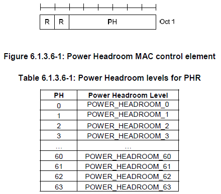

LTE Quick Reference Go Back To Index Home : www.sharetechnote.com
What is Power Headroom ?
Power headroom indicates how much transmission power left for a UE to use in addition to the power being used by current transmission. Simply put, it can be described by a simple formula as below.
Power Headroom = UE Max Transmission Power - PUSCH Power = Pmax - P_pusch
If the Power Headroom value is (+), it indicates "I still have some space under the maximum power" implying "I can transmit more data if you allow".
If the power Headroom value is (-), it indicate "I am already transmitting the power greater than what I am allowed to transmit".
How does UE report Power Headroom Value ?
PHR is a type of MAC CE(MAC Control Element) that report the headroom between the current UE Tx power (estimated power) and the nominal power. eNodeB (Network) use this report value to estimate how much uplink bandwidth a UE can use for a specific subframe. Since the more resource block the UE is using, the higher UE Tx power gets, but the UE Tx power should not exceed the max power defined in the specification. So UE cannot use much resource block (bandwidth) if it does not have enough power headroom.
You will find the following fig and table from 36.321.

How can I figure out real power value from this report value ? You can find the mapping table from 36.133 as shown below.

When does UE transmit the Power Headroom Report ?
There are two triggers for PHR (Power Headroom Report).
i) Path Loss Change greater than a certain threshold : UE can calculate the path loss based on RS(Reference Signal) power notified by network and the measured RS power at UE antenna port. If this value changes over a certain threshold UE transmit PHR.
ii) By some peridic Timer.
These triggers are specified in RRC messages (e.g, RRC Connection Setup, RRC Connection Reconfiguration) as shown below.